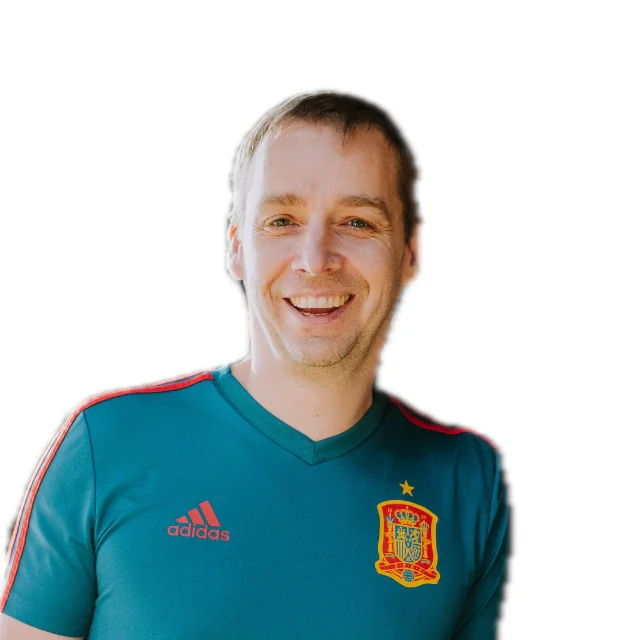
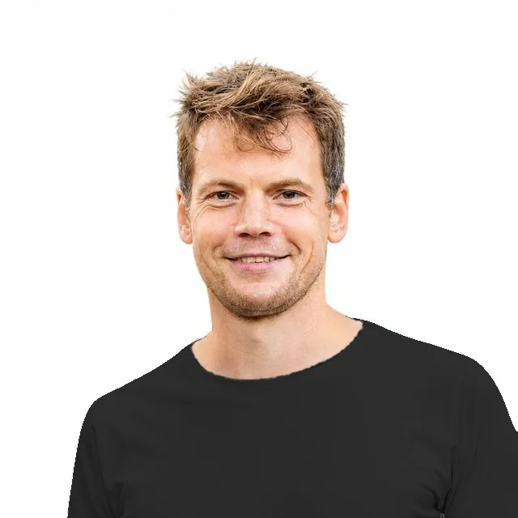

Claude Code koolitus arendustiimidele
Enamik arendajaid kasutab juba AI-agente. Agentne arendus on töömeetod, mis muudab agentide töö usaldusväärseks: selged spetsifikatsioonid, piirangud, automaatsed kontrollid ja paralleelselt töötavad agendid. Kuue nädalaga viite meetodi oma tiimi igapäevatöösse.
Formaat
Tulemused
5× on lõpetajate enda hinnangute mediaan: nii palju kiirenes nende töö lõpuprojektis.
Õppekava
Kuus reedet: juhuslikust agentide kasutamisest korratava meetodini
6 reedet · 9.00–15.30 · veebis, Google Meetis
Õppekava: Agentic Engineering & Claude Code – AI-põhised arendustöövood tarkvaratiimidele · õppekavarühm: info- ja kommunikatsioonitehnoloogia (tarkvaraarendus ja programmeerimine) · maht 50 akadeemilist tundi (37,5 tundi): kontaktõpe 42 ja iseseisev töö 8 akadeemilist tundi
- seadistab Claude Code'i töökeskkonna: CLAUDE.md, oskused ja hookid, mis blokeerivad ohtlikud käsud
- koostab spetsifikatsiooni vastuvõtukriteeriumidega, mida agent saab ise kontrollida
- ehitab kontrolliahela, mille läbimiseni agent oma tööd ise parandab
- automatiseerib korduvad ülesanded tsüklitega
- käitab mitut agenti paralleelselt git worktree'des ja jälgib nende tööd
- dokumenteerib arhitektuuri C4-diagrammide ja ADR-idega
Töökeskkond Kontekst Kontroll Skaleerimine
- Claude Code ja agendi töötsükkel: promptid, tokenid, oskused (skills), alamagendid, MCP, tellimuspaketid ja hinnad
- Hookid: iga tööriistakutse jälgimine ja ohtlike käskude blokeerimine
- Claude Code'i seadistamine oma projektis või meie näidisrepos ning CLAUDE.md loomine käsuga /init
- Hook, mis käivitab iga muudatuse järel linteri või testid. Seejärel püüab teie rühm sellest mööda hiilida
- Projekti kaardid: kihilised kokkuvõtted, C4-mudel, tokenid ja promptide vahemälu
- Disainidokumendid, testimispüramiid, valideerimistsüklid ja alamagendid süvitsi
- C4-mudeli oskus ja andmebaasi skeemi kaart, mõlemad seotud CLAUDE.md-ga
- Promptimine võrdluse kaudu: kirjutate oma prompti, käivitate selle ja seejärel näidislahenduse. Erinevus näitab, mida õppida
- Spetsifikatsioon koos vastuvõtukriteeriumidega, mida agent saab ise kontrollida ja mille paralleelsed valideerimisagendid üle vaatavad
- Kuidas jõuda kontrollitud spetsifikatsioonist töötava koodini ja millised kaks kvaliteediväravat peab iga muudatus läbima: e2e-testid ja jõudlus
- Tsüklid: vestluspõhised, eesmärgipõhised, ajastatud ja proaktiivsed (Anthropicu juhend „Getting started with loops“)
- Spetsifikatsiooni teostamine osade kaupa: iga osa kontrollib valideeriv alamagent, seejärel kordub /code-review, kuni vigu ei jää, ja lõpuks vaatab koodi üle teise tootja mudel
- Kvaliteedivärav teie tehnoloogiale (veebirakendusel Lighthouse, mujal jõudlustest), mis võrdleb tulemust baastasemega ja peatab töö, kui tulemus halveneb
- Rühmatöö: igal rühmal üks ambitsioonikas eesmärk. Jagate töö ära, valite esitleja ja viite asja lõpuni
- Introspektsioon ja jälgitavus: sessioonilogid, /insights, OTEL-i mõõdikud
- Agentidele loodud arhitektuur ja proaktiivsed tsüklid, mis töötavad ka teie eemal olles: logide analüüs, aeglaste päringute läbivaatus, maksete sobitamine
- 2–5 GitHubi issue lahendamine paralleelselt, iga agent oma git worktree's
- Mõõdetav optimeerimistsükkel: testikomplekti kiirendamine või jõudlusskoori tõstmine nii, et mõlemad kvaliteediväravad jäävad roheliseks
Rakendate kogu töövoo oma ettevõtte päris koodibaasis koolitaja toel. Osalejad hindavad neid nädalaid kõige kõrgemalt.
- Seadistatud agentne töökeskkond: CLAUDE.md, oskused, hookid ja kvaliteediväravad
- Päris funktsionaalsus, mis on läbinud kogu töövoo, koos spetsifikatsiooni, arhitektuuriotsuste (ADR) ja C4-diagrammidega
- Lõpuesitlus ja kaasosalejate tagasiside
Teie koolitajad


Kõik koolitajad on vähemalt 10-aastase tarkvaraarenduse kogemusega praktikud, kes kasutavad agentset arendust ja Claude Code'i igapäevases töös.
Kaido on raamatu „AI Coding for Beginners“ kaasautor
Maksumus
Hind ja Töötukassa koolitustoetus
Töö teie enda koodibaasis esimesest päevast (või meie näidisrepos) · 6 reedet · 37,5 tundi · veebis, Google Meetis
Kolm esimest kohorti müüdi välja. Järgmine kohort algab 16. oktoobril ja sinna on veel kohti.
+ km ühe arendaja kohta
- Kõik kuus koolituspäeva
- Lõpuprojekt teie enda koodibaasis
- Plepicu tunnistus
Avaneb Google'i kalender, kus saate aja valida
arvest tagasi Töötukassalt, kuni 2500 € töötaja kohta
Töötukassa hüvitab Eesti tööandjale 80% koolitusarvest koos käibemaksuga, kuni 2500 € töötaja kohta kolme aasta jooksul. Kui tööandja vähese tähtsusega abi piirmäär on ammendunud, on hüvitis 50%. Taotluse esitab tööandja enne koolituse algust ja me valmistame selle koos teiega ette. Koolitusasutus: Plepic koolitus (EHIS-e majandustegevusteade nr 260952). Toetuse tingimused Töötukassa lehel →
Räägi KaidogaAvaneb Google'i kalender, kus saate aja valida
Kõik meie kohordid on kuuenädalase programmi täies mahus läbinud.
Meie koolitusel on osalenud insenerid ettevõtetest HELMES · HOLM BANK · DATEL · BITWEB · AKTIVA · DELFI · MERIT · MINDWORKS · RETHINKERS
Korduma kippuvad küsimused
Mis on agentne arendus?
Agentne arendus on tarkvaraarenduse viis, kus keelemudel kasutab tööriistu korduvas tsüklis: planeerib, kirjutab, testib ja parandab koodi iseseisvalt. Erinevalt üksikust päringust jätkab agent tööd, kuni eesmärk on saavutatud. Õpetame seda Claude Code'iga. See on terminalis töötav agent, millel on juurdepääs kogu süsteemile, samas kui Copilot ja Cursor töötavad koodiredaktori sees.
Kellele koolitus on mõeldud?
Kogenud arendajatele, kellel on vähemalt kaks aastat erialast töökogemust ja juurdepääs päris koodibaasile. Programmeerimise algõpe see ei ole.
Kui kaua koolitus kestab?
Koolitus toimub kuuel reedel, iga kord täispäev (9.00–15.30) Google Meetis. Programmi maht on 50 akadeemilist tundi ehk 37,5 tundi: 42 akadeemilist tundi kontaktõpet ja 8 akadeemilist tundi iseseisvat tööd. Osalejad töötavad oma ettevõtte koodibaasis või Plepicu näidisrepos, kasutades Claude Code'i, Giti ja GitHubi, ning teevad iseseisva tööna koolituspäevade vahel õpitu põhjal ülesandeid oma koodibaasis.
Kas koolituse lõpus saab tunnistuse?
Jah. Tunnistuse saab osaleja, kes on osalenud vähemalt 80% koolitusmahust ja esitanud lõpuprojekti. Õpiväljundite saavutamist hinnatakse lõpuprojekti põhjal: osaleja rakendab õpitut oma koodibaasis ja esitleb tulemust. Tunnistus hõlmab Claude Code'i, kontekstihaldust ja agendi kogu töötsüklit.
Kas koolitus sobib ka tiimile, kes juba kasutab agente?
Jah. Õpetame meetodit, mitte tööriista. Hilisemad koolituspäevad käsitlevad spetsifikatsioone, mida agent saab ise kontrollida, kvaliteediväravaid, paralleelseid agente git worktree'des, jälgitavust ja agentidele loodud arhitektuuri. Varasem Claude'i kogemus tuleb kasuks, kuid pole nõutud.
Kui palju koolitus maksab ja kuidas koolitustoetus toimib?
2520 € + km ühe arendaja kohta. Töötukassa hüvitab Eesti tööandjale 80% koolitusarvest koos käibemaksuga, kuni 2500 € töötaja kohta kolme aasta jooksul. Tööandja esitab taotluse e-töötukassas enne koolituse algust ja me valmistame selle koos temaga ette. Koolitusasutus on Plepic koolitus (Plepic OÜ, registrikood 11275881), EHIS-e majandustegevusteade nr 260952. Programmi maht vastab koolitustoetuse miinimumnõudele.
Alustage oma koodibaasist
20-minutiline kõne Kaidoga. Ettevalmistust ega slaide pole vaja. Võtke kaasa üks päris ülesanne, mis teil praegu töös on, ja arutame, mida agent sellega teeks.
Tulete kogu tiimiga? Samas kõnes selgitab Kaido, kuidas Töötukassa koolitustoetus koolituse kulud hüvitab, ja paneb koos teiega kokku kohordi, mis sobib teie tiimi ja koodibaasiga.
Broneeri 20-minutiline kõneAvaneb Google'i kalender, kus saate aja valida